Clutch Release Bearing: Service and Repair
Clutch ReplacementSpecial Tools Required
^ Clutch alignment disc 07JAF-PM7011A
^ Ring gear holder 07LAB-PV00100 or 07924-PD20003
^ Clutch alignment shaft 07LAF-PT00110
^ Bearing remover shaft 07936-KC10500
^ Attachment, 22 x 24 mm 07746-0010800
^ Driver 07749-0010000
^ Remover handle 07936-3710100
^ Slide hammer, 3/8"-16 UNF commercially available
Pressure Plate and Clutch Disc Removal (5-Speed Model)
1. Check the height of the diaphragm spring fingers using the clutch alignment disc (A), clutch alignment shaft (B), remover handle (C), and a feeler gauge (D). If the height is more than the service limit, replace the pressure plate.
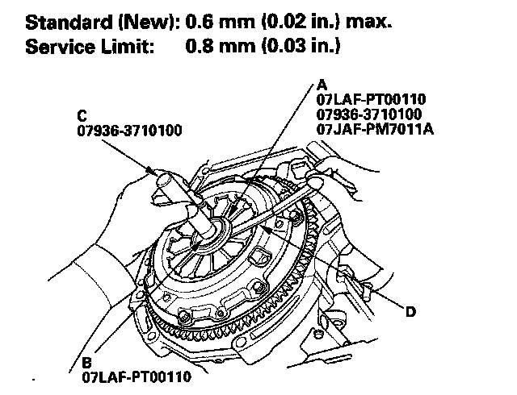
2. Install the ring gear holder (A), clutch alignment shaft (B), and remover handle (C).
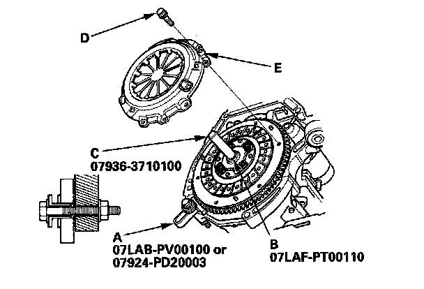
3. To prevent warping, unscrew the pressure plate mounting bolts (D) in a crisscross pattern in several steps, then remove the pressure plate (E).
4. Inspect the fingers of the diaphragm spring (A) for wear at the release bearing contact area.
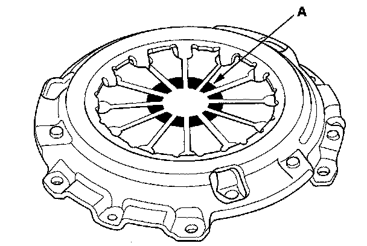
5. Inspect the pressure plate surface (A) for wear, cracks, and burning.
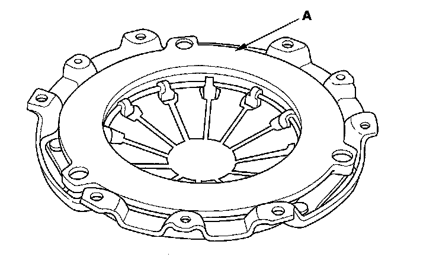
6. Inspect for warpage using a straight edge (A) and a feeler gauge (B). Measure across the pressure plate (C). If the warpage is more than the service limit, replace the pressure plate.
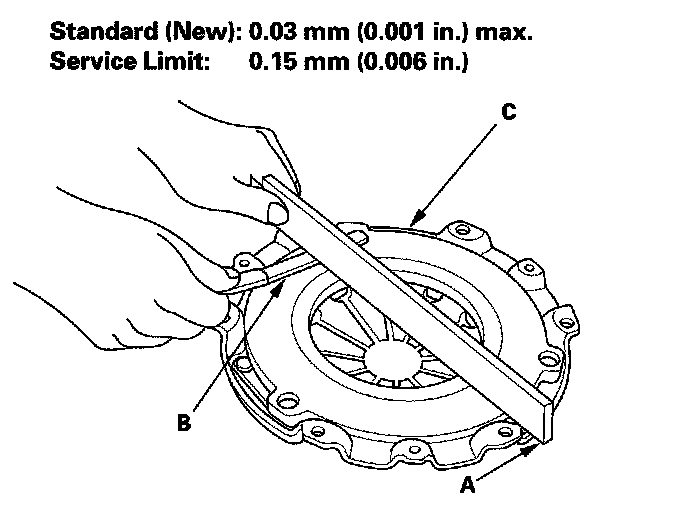
7. Remove the clutch disc (A), clutch alignment shaft (B), and remover handle (C).
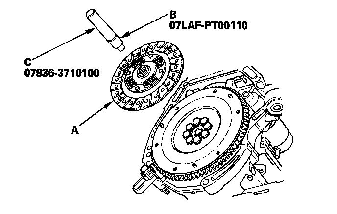
8. Inspect the lining of the clutch disc for signs of slippage or oil. If the clutch disc looks burnt or is oil soaked, replace it. Find and repair the source of the oil leak, if the clutch disc is soaked.
9. Measure clutch disc thickness. If the thickness is less than the service limit, replace the clutch disc.
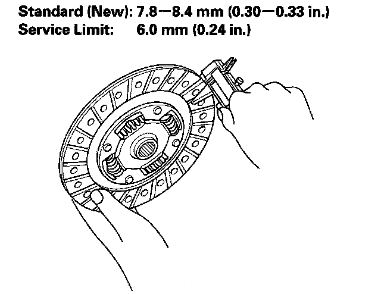
10. Measure rivet depth from the clutch disc lining surface (A) to the rivets (B) on both sides. If the rivet depth is less than the service limit, replace the clutch disc.
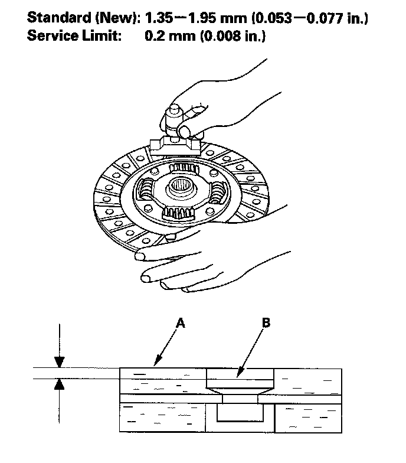
Crankshaft Pilot Bushing Inspection (5-Speed Model)
1. Inspect the crankshaft pilot bushing for wear and damage.
2. Inspect the inside surface of the crankshaft pilot bushing with your finger. If the crankshaft pilot bushing is not smooth, replace it.
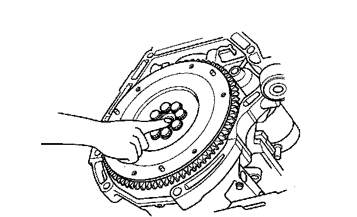
Crankshaft Pilot Bushing Replacement (5-Speed Model)
1. Remove the crankshaft pilot bushing (A) using the bearing remover shaft (B) and the slide hammer (C).
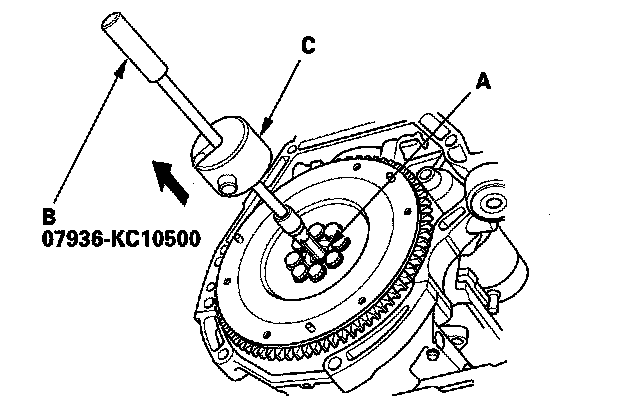
2. Install the new crankshaft pilot bushing (A) into the crankshaft using the driver (B) and 22 x 24 mm attachment (C). Apply a light coat of super high temp urea grease (P/N 08798-9002) to the crankshaft pilot bushing surface.
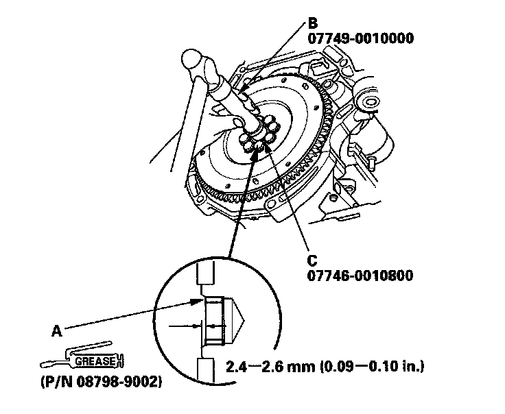
Flywheel Inspection (5-Speed Model)
1. Inspect the ring gear teeth for wear and damage.
2. Inspect the clutch disc mating surface on the flywheel for wear, cracks, and burning.
3. Measure flywheel (A) runout using a dial indicator (B) through at least two full turns with the engine installed. Push against the flywheel each time you turn it to take up the crankshaft thrust washer clearance. If the runout is more than the service limit, replace the flywheel, and recheck the runout. Resurfacing the flywheel is not recommended.
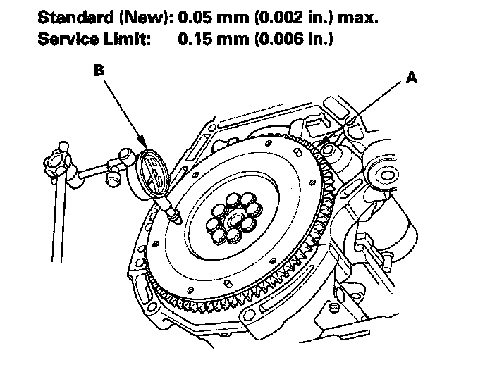
Flywheel Replacement (5-Speed Model)
1. Install the ring gear holder (A).
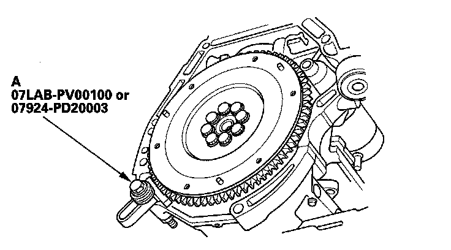
2. Remove the flywheel mounting bolts in a crisscross pattern in several steps, then remove the flywheel and ring gear holder.
3. Install the flywheel on the crankshaft, and install the mounting bolts finger-tight.
4. Install the ring gear holder (A), then torque the flywheel mounting bolts (B) in a crisscross pattern in several steps.
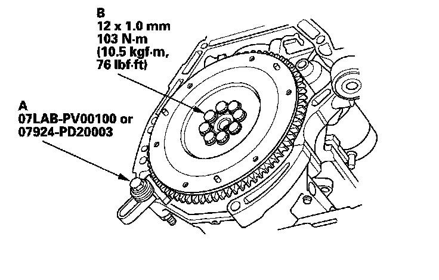
Clutch Disc and Pressure Plate Installation (5-Speed Model)
1. Temporarily install the clutch disc onto the splines of the transmission mainshaft. Make sure the clutch disc slides freely on the mainshaft.
2. Install the ring gear holder (A).
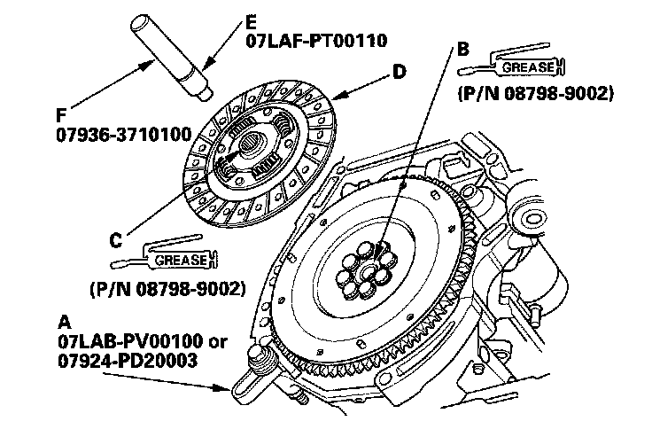
3. Apply a light coat of super high temp urea grease (P/N 08798-9002) to the crankshaft pilot bushing (B).
4. Apply super high temp urea grease (P/N 08798-9002) to the splines (C) of the clutch disc (D), then install the clutch disc using the clutch alignment shaft (E) and remover handle (F).
5. Install the pressure plate (A) and the mounting bolts (B) finger-tight.
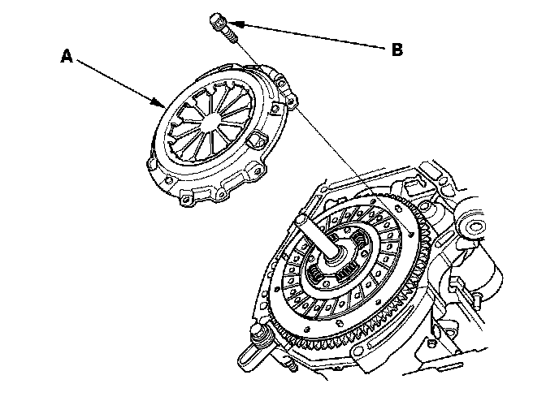
6. Torque the mounting bolts in a crisscross pattern. Tighten the bolts in several steps to prevent warping the diaphragm spring.
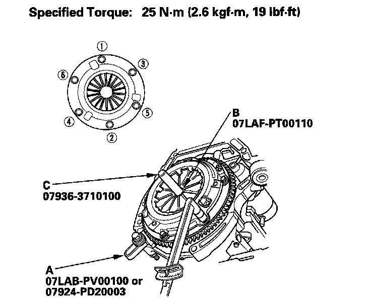
7. Remove the ring gear holder (A), clutch alignment shaft (B), and remover handle (C).
8. Make sure the diaphragm spring fingers are all the same height.
Release Bearing Replacement (5-Speed Model)
1. Remove the release fork boot (A) from the clutch housing (B).
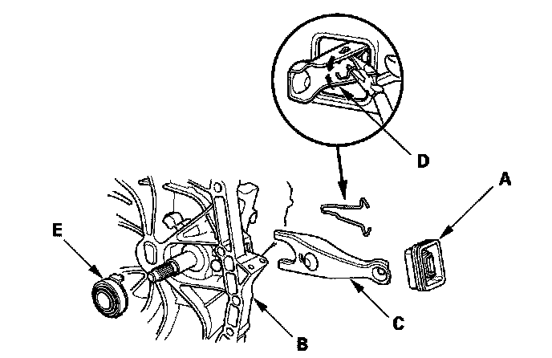
2. Remove the release fork (C) from the clutch housing by squeezing the release fork set spring (D) with pliers. Remove the release bearing (E).
3. Check the play of the release bearing by spinning it with your hand. If there is excessive play or noise, replace the release bearing.
NOTE: The release bearing is packed with grease. Do not wash it in solvent.
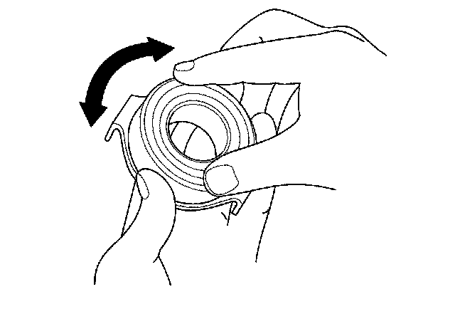
4. Apply super high temp urea grease (P/N 08798-9002) to the release fork (A), the release fork bolt (B), the release bearing (C), and the release bearing guide (D) in the shaded areas.
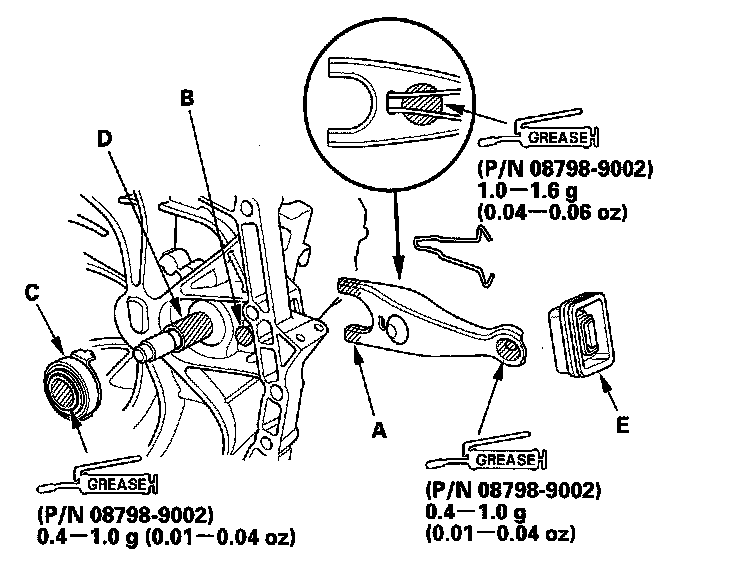
5. With the release fork slid between the release bearing pawls, install the release bearing on the mainshaft while inserting the release fork through the hole in the clutch housing.
6. Align the detent of the release fork with the release fork bolt, then squarely press the release fork over the release fork bolt.
7. Install the release fork boot (E). Make sure the boot seals around the release fork and clutch housing.
8. Move the release fork (A) right and left to make sure that it fits properly against the release bearing (B) and that the release bearing slides smoothly.
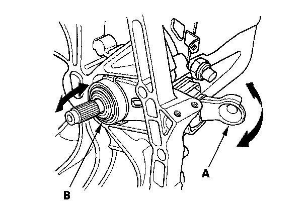
Special Tools Required
^ Clutch alignment disc 07JAF-PM7011A
^ Ring gear holder 07LAB-PV00100 or 07924-PD20003
^ Clutch alignment shaft 07ZAF-PR8A100
^ Bearing remover shaft 07936-KC10500
^ Attachment, 22 x 24 mm 07746-0010800
^ Driver 07749-0010000
^ Remover handle 07936-3710100
^ Slide hammer, 3/8"-16 UNF commercially available
Pressure Plate and Clutch Disc Removal (6-Speed Model)
1. Check the height of the diaphragm spring fingers using the clutch alignment disc (A), clutch alignment shaft (B), remover handle (C), and a feeler gauge (D). If the height is more than the service limit, replace the pressure plate.
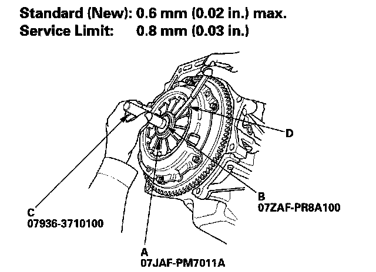
2. Install the ring gear holder (A), clutch alignment shaft (B), and remover handle (C).
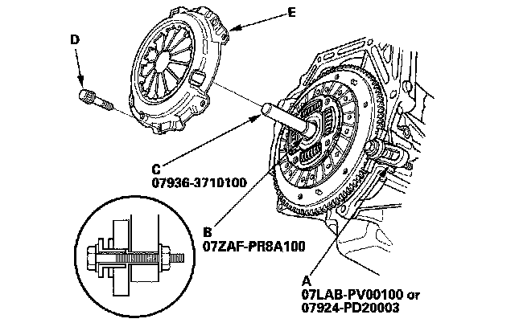
3. To prevent warping, unscrew the pressure plate mounting bolts (D) in a crisscross pattern in several steps, then remove the pressure plate (E).
4. Inspect the fingers of the diaphragm spring (A) for wear at the release bearing contact area.
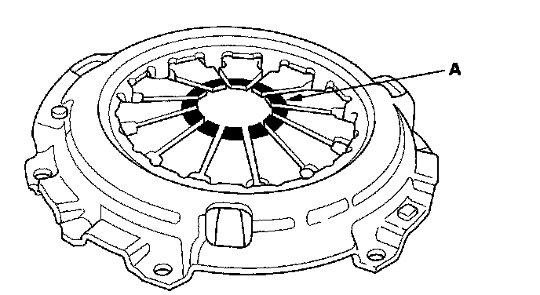
5. Inspect the pressure plate surface (A) for wear, cracks, and burning.
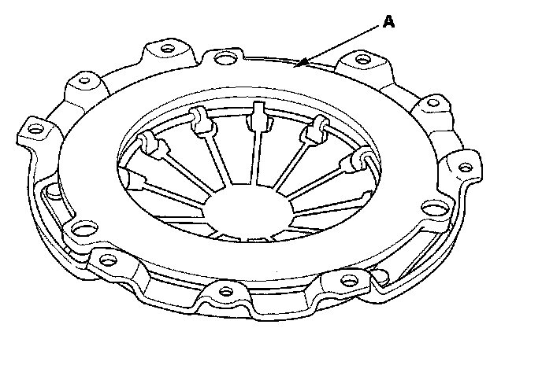
6. Inspect for warpage using a straightedge (A) and a feeler gauge (B). Measure across the pressure plate (C). If the warpage is more than the service limit, replace the pressure plate.
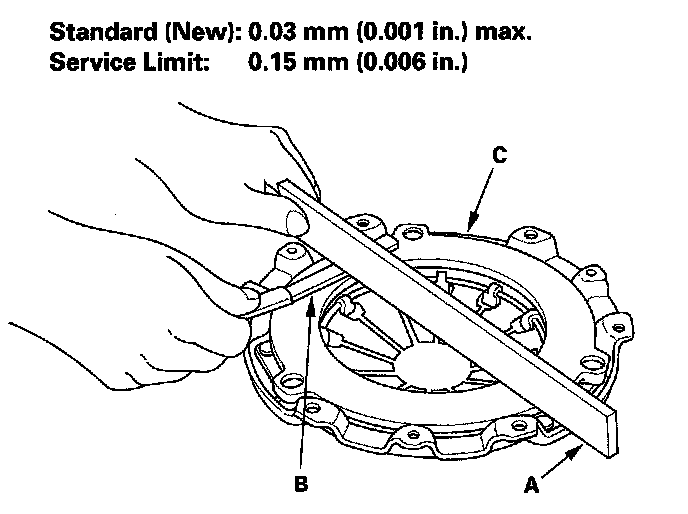
7. Remove the clutch disc (A), clutch alignment shaft (B), and remover handle (C).
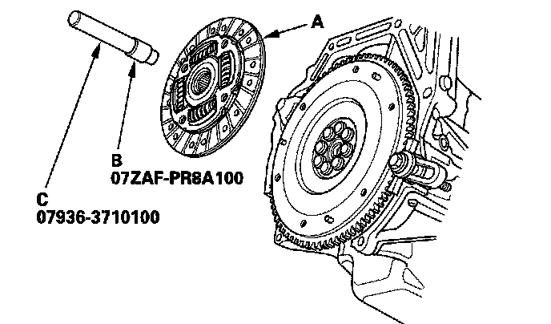
8. Inspect the lining of the clutch disc for signs of slippage or oil. If the clutch disc looks burnt or is oil soaked, replace it. Find and repair the source of the oil leak, if the clutch disc is soaked.
9. Measure clutch disc thickness. If the thickness is less than the service limit, replace the clutch disc.
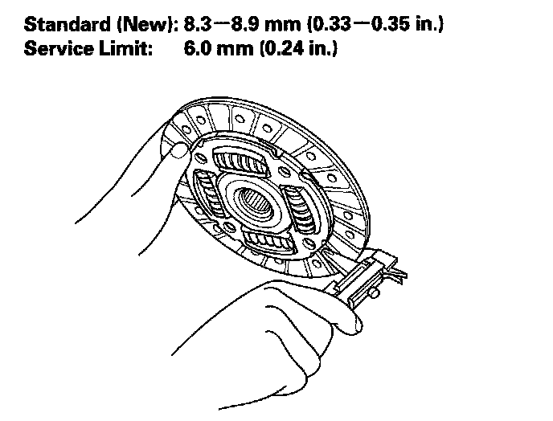
10. Measure rivet depth from the clutch disc lining surface (A) to the rivets (B) on both sides. If the rivet depth is less than the service limit, replace the clutch disc.
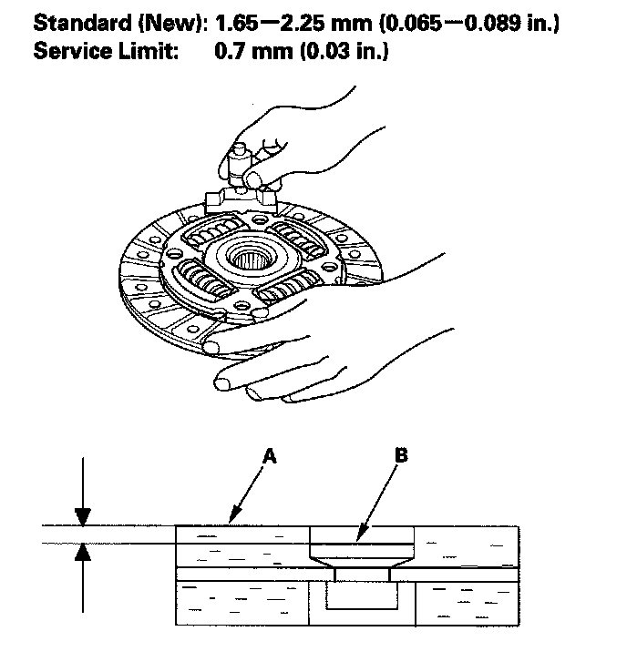
Crankshaft Pilot Bushing Inspection (6-Speed Model)
1. Inspect the crankshaft pilot bushing for wear and damage.
2. Inspect the inside surface of the crankshaft pilot bushing with your finger. If the crankshaft pilot bushing is not smooth, replace it.
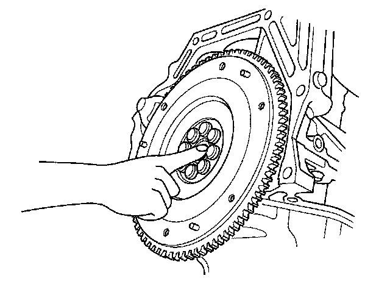
Crankshaft Pilot Bushing Replacement (6-Speed Model)
1. Remove the crankshaft pilot bushing (A) using the bearing remover shaft (B) and the slide hammer (C).
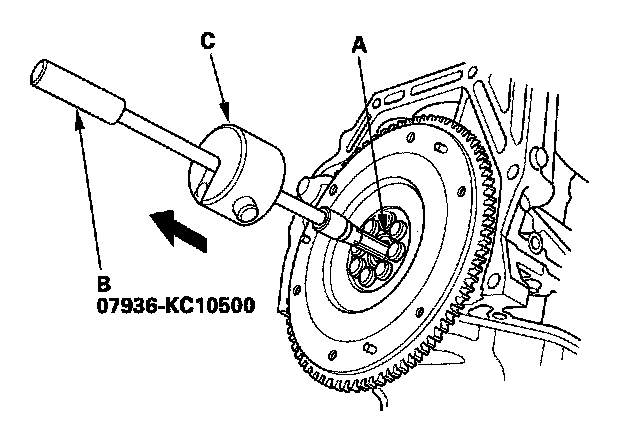
2. Install the new crankshaft pilot bushing (A) into the crankshaft using the driver (B) and 22 x 24 mm attachment (C). Apply a light coat of super high temp urea grease (P/N 08798-9002) to the crankshaft pilot bushing surface.
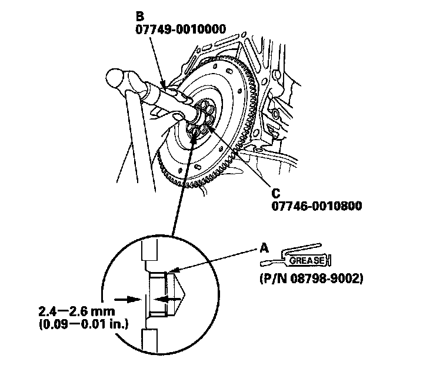
Flywheel Inspection (6-Speed Model)
1. Inspect the ring gear teeth for wear and damage.
2. Inspect the clutch disc mating surface on the flywheel for wear, cracks, and burning.
3. Measure flywheel (A) runout using a dial indicator (B) through at least two full turns with the engine installed. Push against the flywheel each time you turn it to take up the crankshaft thrust washer clearance. If the runout is more than the service limit, replace the flywheel, and recheck the runout. Resurfacing the flywheel is not recommended.
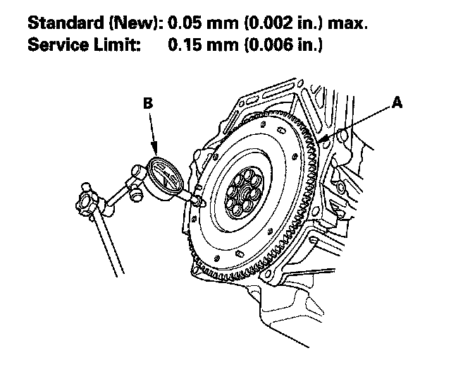
Flywheel Replacement (6-Speed Model)
1. Install the ring gear holder (A).
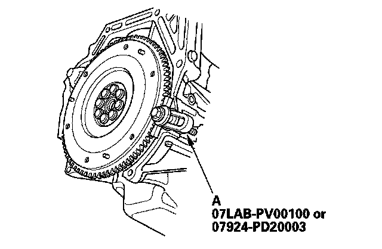
2. Remove the flywheel mounting bolts in a crisscross pattern in several steps, then remove the flywheel and ring gear holder.
3. Install the flywheel on the crankshaft, and install the mounting bolts finger-tight.
4. Install the ring gear holder (A), then torque the flywheel mounting bolts (B) in a crisscross pattern in several steps.

Clutch Disc and Pressure Plate Installation (6-Speed Model)
1. Temporarily install the clutch disc onto the splines of the transmission mainshaft. Make sure the clutch disc slides freely on the mainshaft.
2. Install the ring gear holder (A).
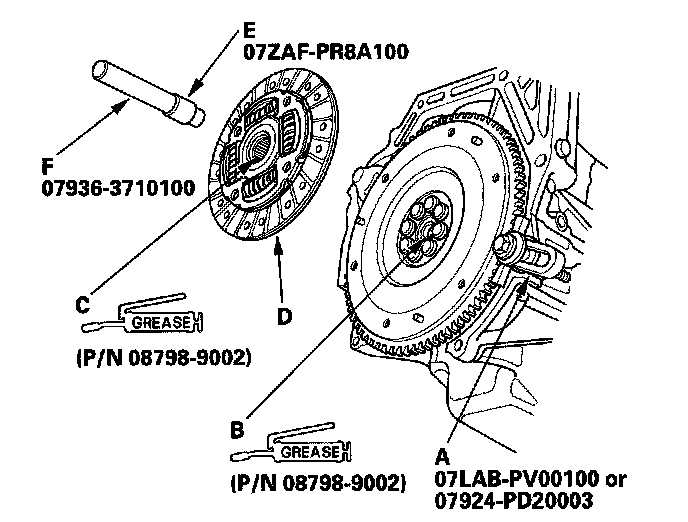
3. Apply a light coat of super high temp urea grease (P/N 08798-9002) to the crankshaft pilot bushing (B).
4. Apply super high temp urea grease (P/N 08798-9002) to the splines (C) of the clutch disc (D), then install the clutch disc using the clutch alignment shaft (E) and remover handle (F).
5. Install the pressure plate (A) and the mounting bolts (B) finger-tight.
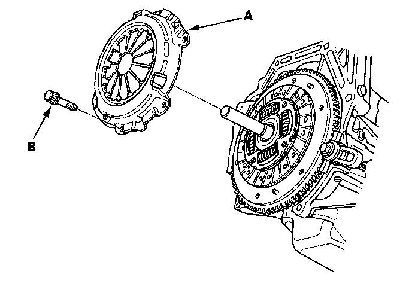
6. Torque the mounting bolts in a crisscross pattern. Tighten the bolts in several steps to prevent warping the diaphragm spring.
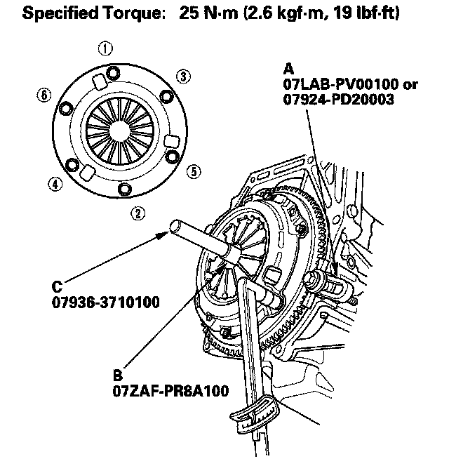
7. Remove the ring gear holder (A), clutch alignment shaft (B), and remover handle (C).
8. Make sure the diaphragm spring fingers are all the same height.
Release Bearing Replacement (6-Speed Model)
1. Remove the release fork boot (A) from the clutch housing (B).
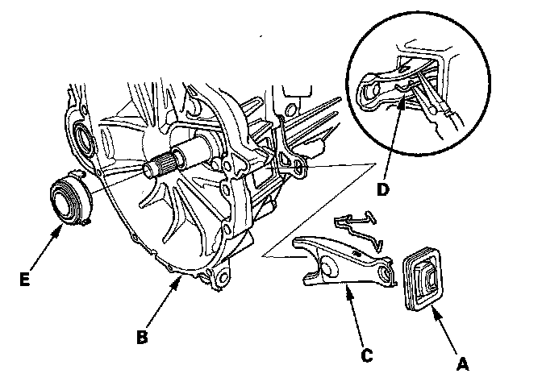
2. Remove the release fork (C) from the clutch housing by squeezing the release fork set spring (D) with pliers. Remove the release bearing (E).
3. Check the play of the release bearing by spinning it with your hand. If there is excessive play or noise, replace the release bearing.
NOTE: The release bearing is packed with grease. Do not wash it in solvent.
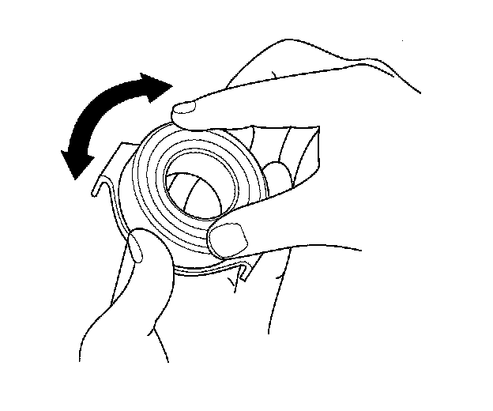
4. Apply super high temp urea grease (P/N 08798-9002) to the release fork (A), the release fork bolt (B), the release bearing (C), and the release bearing guide (D) in the shaded areas.
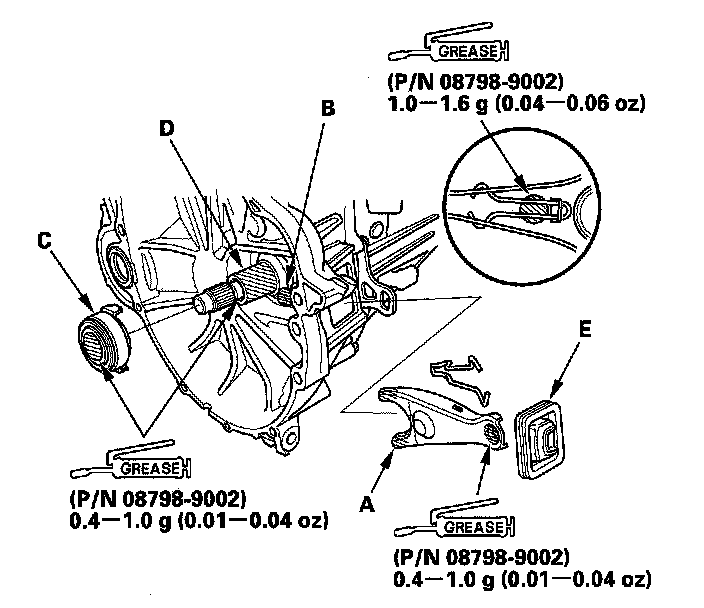
5. With the release fork slid between the release bearing pawls, install the release bearing on the mainshaft while inserting the release fork through the hole in the clutch housing.
6. Align the detent of the release fork with the release fork bolt, then squarely press the release fork over the release fork bolt.
7. Install the release fork boot (E). Make sure the boot seals around the release fork and clutch housing.
8. Move the release fork (A) right and left to make sure that it fits properly against the release bearing (B), and that the release bearing slides smoothly.
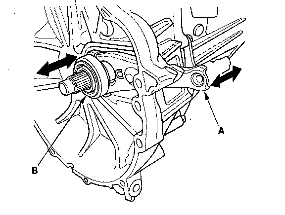